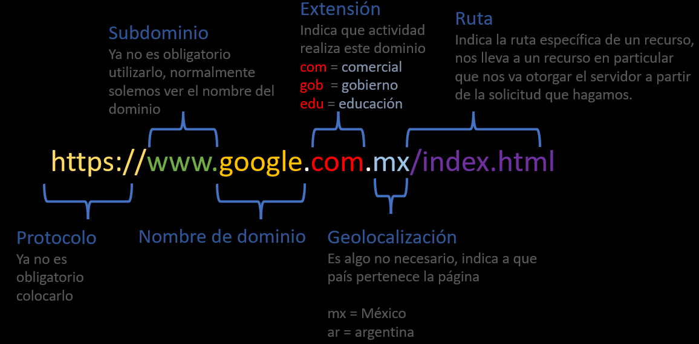
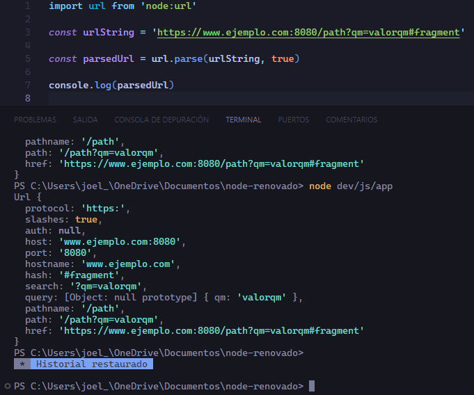
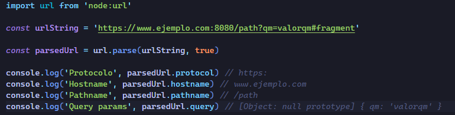
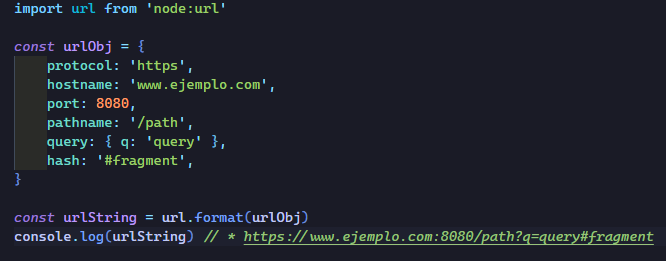
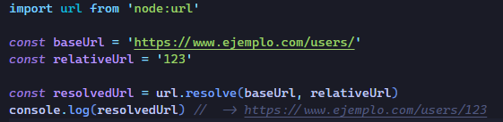

Una URL en pocas palabras es una dirección de un recurso en la web, sea una página completa, una imagen, o un documento, etc. Esto con la finalidad de ser localizado o identificado.
Las siglas URL significan lo siguiente: UNIFORM RESOURCE LOCATOR, en español seria Localizador Uniforme de Recursos.
Estructura de una URL

Nos enfocaremos en la ruta o PATH. Si nosotros hemos navegado en una web ya sabemos que podemos acceder a una parte especifica del servidor de una web, esto lo logramos con un slash (/) y de esta manera podemos seguir el camino hasta llegar a una ubicación exacta.
Parámetros de ruta (Path Parameters)
Los parámetros de ruta son utilizados para identificar recursos específicos en una aplicación web o API. Estos permiten a los desarrolladores crear rutas dinámicas que respondan a diferentes entradas, como identificadores únicos, nombres, fechas, etc.
Ejemplo en una Aplicación de Usuarios: Supongamos que estamos construyendo una aplicación de gestión de usuarios y tenemos una ruta para obtener información sobre un usuario específico. La URL podría verse así: https://api.ejemplo.com/users/{id}
Aquí, {id} es un parámetro de ruta que permite especificar el ID del usuario que deseas recuperar. Por ejemplo, https://api.ejemplo.com/users/123 recuperaría la información del usuario con ID 123.
Ventajas:
Legibilidad: Las URL con parámetros de ruta suelen ser más legibles y expresivas, ya que indican claramente qué recurso se está solicitando.
SEO Amigable: En algunos casos, el uso de parámetros de ruta puede mejorar la optimización para motores de búsqueda (SEO), ya que los términos relevantes están directamente en la URL.
Ejemplo en una API REST:
GET /api/products/{category}/items/{itemID}
Aquí, la ruta se adapta para devolver información sobre un ítem específico en una categoría dada.
Parámetros de consulta (Query Parameters)
Parámetros de Consulta (Query Parameters) tambien se les conoce Query Strings:
Sintaxis:
Los parámetros de consulta se añaden al final de la URL y se identifican mediante el símbolo de interrogación ?, seguido de pares clave=valor separados por el símbolo &.
En la URL https://api.ejemplo.com/search?query=term&page=1, los parámetros de consulta son query y page con valores term y 1 respectivamente.
Normalmente Usamos parámetros query para filtrar solicitudes GET (para obtener recursos específicos).
En resumen, mientras que los parámetros de ruta se encuentran directamente en la ruta de la URL, los parámetros de consulta se agregan al final de la URL después del símbolo de interrogación. Ambos tipos de parámetros son utilizados para enviar información adicional a un servidor web al realizar una solicitud.
Módulo URL
En Node.js, el módulo url proporciona utilidades para trabajar con URLs. Este módulo es parte del núcleo de Node.js, por lo que no es necesario instalarlo por separado
Esta función toma una cadena de URL y la descompone en partes más pequeñas, devolviendo un objeto con propiedades como protocol, hostname, port, pathname, query, y hash.
urlStr : Url en string.
parseQueryString (opcional): Indica si la cadena de consulta debe ser analizada en busca de parámetros (por defecto es false).
slashesDenoteHost (opcional): Indica si las barras diagonales dobles (//) indican la presencia de un host (por defecto es false).
En este ejemplo vemos todo los valores que puede tener una URL, habra veces en las que ocupamos el puerto dentro de la URL.

url.format(urlObj):
Esta función toma un objeto de URL y lo convierte de nuevo en una cadena de URL.

url.resolve(from, to):
Esta función resuelve una URL relativa (to) respecto a una URL base (from).

Para manipular la URL tambien podemos ocupar el constructor Url